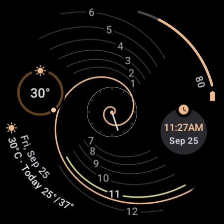
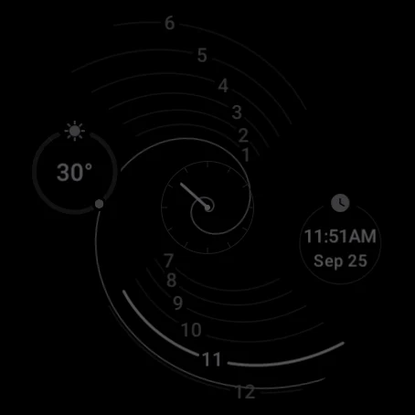
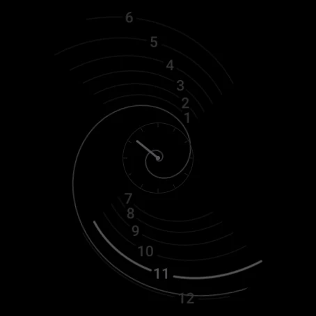
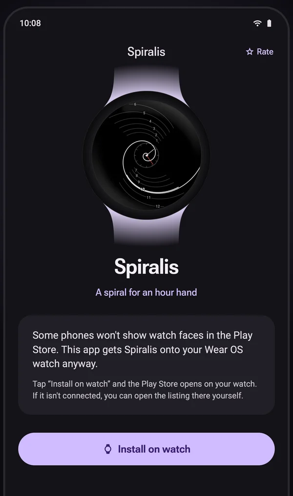

A golden spiral
Every quarter turn, the spiral grows by the golden ratio, φ ≈ 1.618.
r = 5 · φ2θ/πSpiralis for Wear OS
The spiral is the hour hand. It turns 30° an hour, and on the hour it lands exactly on that hour's line. All twelve lines are cut from the same curve, the one behind nautilus shells and sunflower heads.
Free. For Wear OS 6 and newer. No ads, no accounts, no tracking.

The spiral · now
Make it yours
On the watch, long-press Spiralis and tap Customize. You get these same options. Try them on the watch on this page.
Find the hour line the spiral is lying on, or about to reach. That line glows, and its numeral brightens. The small dial in the middle keeps the minutes. Drag the slider under the watch, press play to watch a whole turn, or jump to a time:
The phone app sets up the face in one tap: a palette and a set of complications. Empty slots draw nothing, so the spiral runs through their space.
Seven Material 3 Expressive palettes. Each one colors the spiral and the center dot, the progress bars, and the current hour line (the small dot).
Read the minutes on the small center dial, or let the current hour line fill up over the hour, the way the spiral sweeps it. Or both.
Here the rings show the weather and the time, and the arcs your battery and the day's forecast. Swap in any complication you like: rings and arcs fill up for values like steps or battery, and mark a range like today's temperatures.
Straight from the watch
Captures from a Wear OS 6 watch. Always-on lights only a few percent of the screen and keeps the spiral readable.


How it works
Every quarter turn, the spiral grows by the golden ratio, φ ≈ 1.618.
r = 5 · φ2θ/πThe spiral turns clockwise once every twelve hours. Each hour line is the spiral itself, frozen where it lies on the hour, so the hand and the line meet exactly.
For one minute every twelve hours, the face has a little something to say about where its curve comes from. You'll know it when you see it.
Install
Spiralis is free on Google Play for watches with Wear OS 6 or newer. It runs entirely on the watch.
Open the Play Store on your watch and search for Spiralis, or use the Google Play button on this page and install it to your watch.
Some phones don't list watch faces. The same listing then installs the small Spiralis phone app. Tap Install on watch and the listing opens on your paired watch. It also has the four presets.

The watch faces don't collect, store or send any personal data. There are no accounts, ads or analytics. Read the privacy policy.
Have a look at the support page, or email developerdfa@gmail.com.